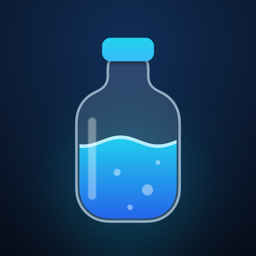

Privacy Policy
Bottle of Water · Effective October 18, 2026
In short: Bottle of Water does not collect, sell or share any personal data. There are no accounts, servers, analytics, ads or third-party SDKs. Your water log stays on your device and, if you allow it, in Apple Health.
What the app stores
Your drinks (amount and time), your daily goal, units, presets and reminder settings. This data is stored only on your iPhone, in the app’s private container shared with its own widgets. It is never sent to us or anyone else. Deleting the app deletes this data.
Apple Health
With your permission, Bottle of Water saves each drink to Apple Health as Dietary Water and updates or deletes it when you edit or remove the entry. The app only writes water data; it does not read any of your health data. Health data is never used for advertising, never shared with third parties and never stored outside your device and Apple Health. You can turn access off at any time in the Health app → Sharing → Apps → Bottle of Water.
Notifications, widgets and Siri
Reminders are local notifications scheduled on your device. Widgets and Control Center buttons read and write the same on-device data. When you use Siri or Shortcuts, your request is processed by Apple under Apple’s privacy policy; we receive nothing.
Children
The app does not collect data from anyone, including children.
Changes
If this policy changes, the new version will be published on this page with a new effective date.
Contact
Viktor Vlasov · yar.thedeveloper@proton.me
Политика конфиденциальности
Коротко: Bottle of Water не собирает, не продаёт и не передаёт персональные данные. Нет аккаунтов, серверов, аналитики, рекламы и сторонних SDK. Ваши записи хранятся на устройстве и, если вы разрешите, в Apple Health.
Что хранит приложение
Записи о выпитой воде (объём и время), цель, единицы, пресеты и настройки напоминаний. Данные хранятся только на iPhone — в контейнере приложения, общем с его виджетами, — и никуда не отправляются. При удалении приложения они удаляются.
Apple Health
С вашего разрешения приложение сохраняет каждую запись в Apple Health как «Вода» и обновляет или удаляет её при изменении записи. Приложение только записывает данные о воде и не читает другие данные о здоровье. Данные о здоровье не используются для рекламы, не передаются третьим лицам и не хранятся вне устройства и Apple Health. Доступ можно выключить в любой момент: «Здоровье» → Доступ → Приложения → Bottle of Water.
Уведомления, виджеты и Siri
Напоминания — локальные уведомления на устройстве. Виджеты и кнопки Пункта управления работают с теми же локальными данными. Запросы к Siri и Командам обрабатывает Apple согласно политике конфиденциальности Apple; мы ничего не получаем.
Контакты
Виктор Власов · yar.thedeveloper@proton.me